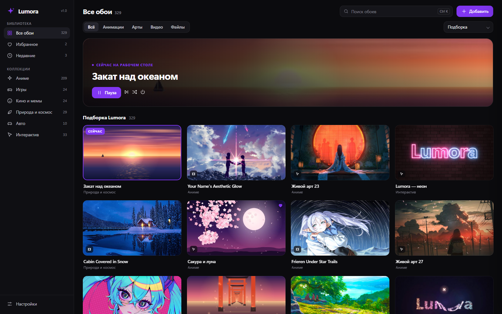
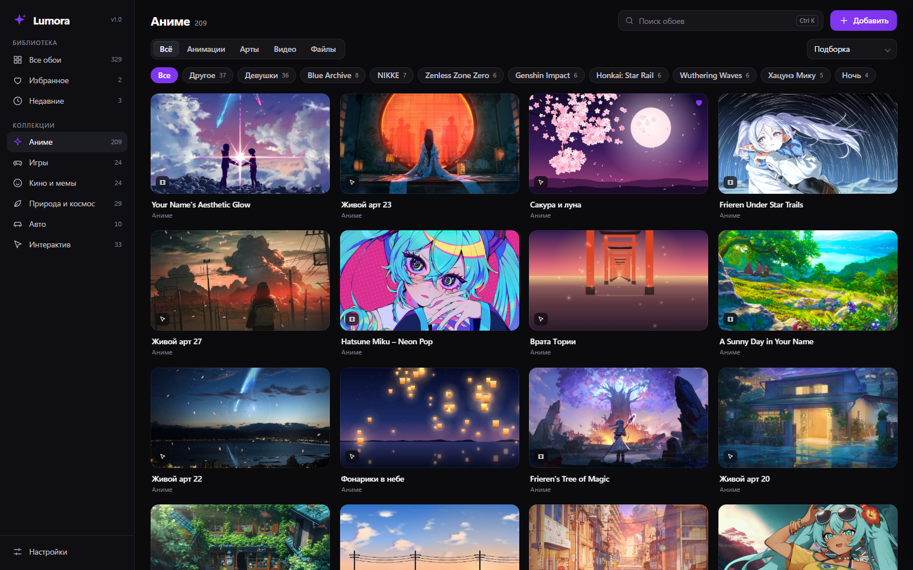
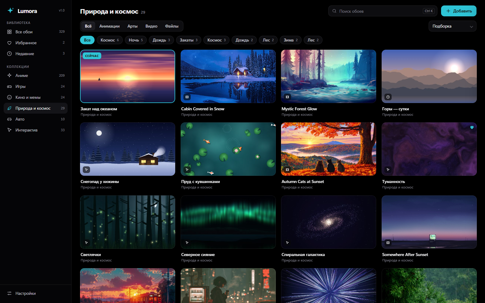
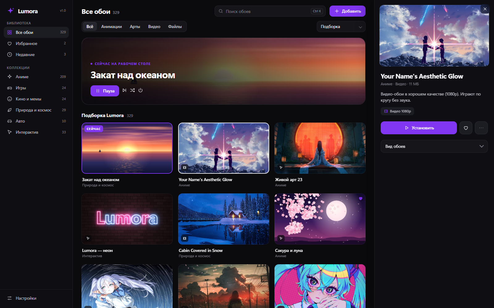
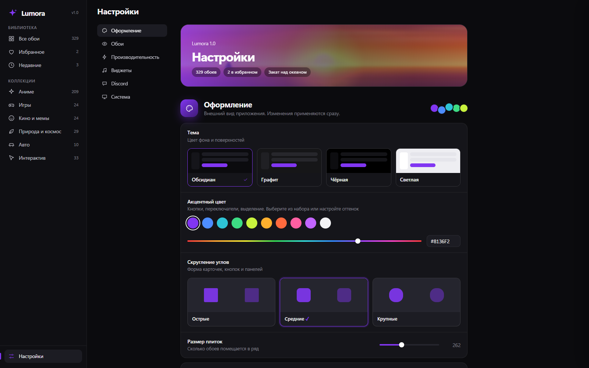
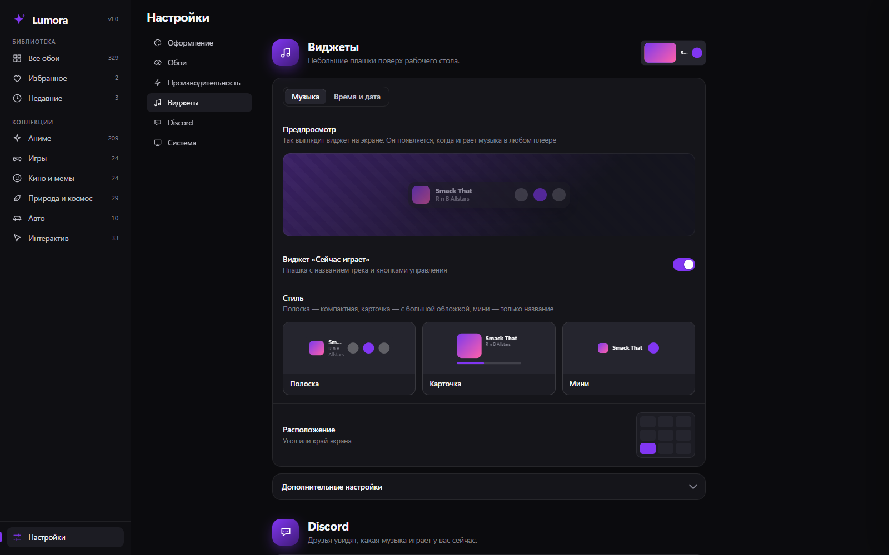
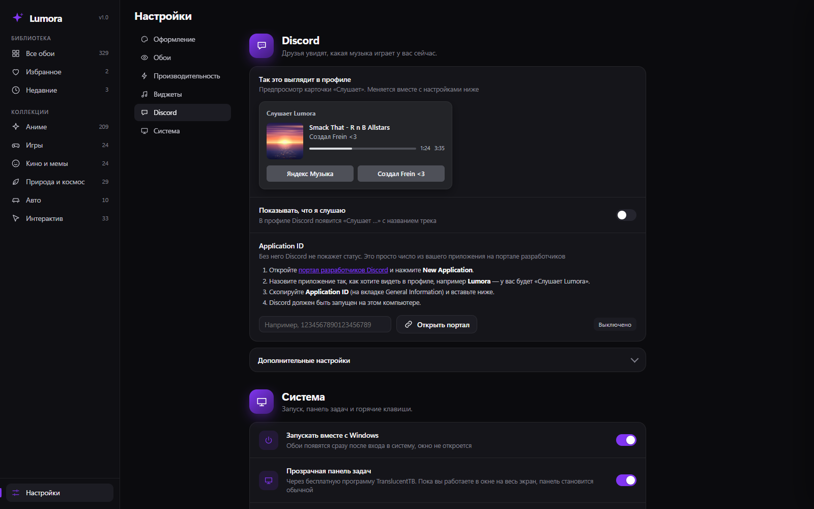

Видео 1080p, оживающие аниме-арты и красивые анимации прямо под значками рабочего стола. Музыка, часы, погода и Discord — в одном лёгком приложении.

36 секунд — и всё понятно.
Простой интерфейс и много настроек для тех, кто любит подкрутить.
Встроенные анимации, видео-обои 1080p и аниме-арты, которые двигаются за курсором, с частицами и бликами. Свои картинки, GIF, видео и HTML — тоже.
Когда рабочий стол закрыт окнами, обои засыпают. Низкий приоритет, лимит кадров, чёткость, экономия на батарее.
Музыкальные обои с эквалайзером и обложкой. Виджет «Сейчас играет» с кнопками и перемоткой, мини-плеер прямо в приложении.
Четыре стиля, шесть шрифтов, любой цвет и фон. Расположение в девяти точках экрана или перетащите мышью.
В профиле — «Слушает …» с названием, исполнителем, обложкой и временем трека.
Четыре темы, любой акцентный цвет, скругление, масштаб. Яркость, контраст, размытие и затемнение для каждых обоев.
Одним переключателем. Когда вы в окне на весь экран — панель снова обычная.
Слайд-шоу из избранного или всей коллекции. Горячие клавиши работают из любой программы.
Запуск с Windows, мгновенный старт, окно открывается за пару секунд.
Тёмные и светлые темы, любой акцент. Скриншоты настоящего приложения.






Сама Lumora лёгкая. Дополнительные коллекции — отдельными установщиками: аниме-арты и около 220 видео-обоев в 1080p.
Без прав администратора, без лишних вопросов.